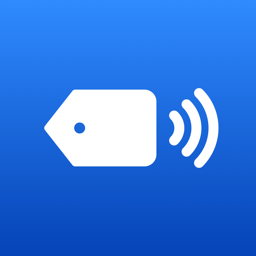

RFID Tag Toolkit
An iPhone app for evaluating UHF RFID inlays and labels with a Zebra RFD40 reader.
- Identify any label — finds the one tag in front of the reader by its TID, even blank labels that share a factory EPC, and detects the chip.
- Measure real-world range — step away with a tape measure; the app records short readings and works out the reliable and absolute range for each scenario.
- Compare inlays — a matrix across your standard scenarios, bench power sweeps, and PDF reports.
- Encode tags — unique test EPCs from the GS1 demonstration range, retail SGTIN-96 from a UPC, hex or text.
All data stays on your iPhone. No account, no tracking.